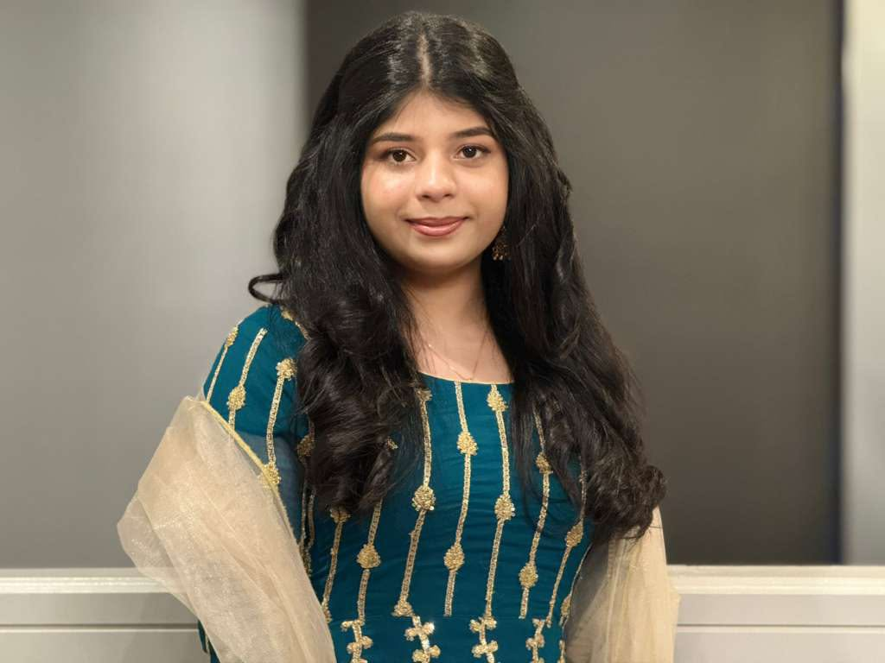

∑
Mathematics
Patterns, problem-solving, and the satisfaction of finding an answer.
A LITTLE INTRODUCTION
Exploring the world, finding beauty in little things, and figuring out where curiosity takes me.
Get to know me ↗01 / THE PERSON BEHIND THE PAGE
Hello, I'm Zunaira!
Originally from Pakistan and now building new experiences in America, I've grown up appreciating different cultures, perspectives, and ways of seeing the world.
I'm fascinated by mathematics, drawn to technology, and always curious about the little details that make people and experiences interesting.
I love discovering new places, trying different foods, learning languages, and collecting memories along the way. I'm still discovering who I want to become, and that's one of my favorite parts of the journey.
02 / THINGS THAT MAKE LIFE INTERESTING
Patterns, problem-solving, and the satisfaction of finding an answer.
Curiosity about innovation and the possibilities of the digital world.
New places, different cultures, interesting streets, and new restaurants.
Creamy pasta, spicy food, coffee, and a good slice of Biscoff cake.
03 / BEYOND THE EVERYDAY
My roots are in Pakistan, while my experiences in America continue to introduce me to new people, ideas, and cultures. I appreciate carrying pieces of both worlds with me.

04 / PLACES ON MY MIND
A few places I hope to experience someday.
Light rain, cozy cafés, and beautiful streets.
A city full of energy, discovery, and technology.
Beautiful landscapes and peaceful scenery.
05 / THE LITTLE THINGS
A rainy afternoon, a long drive with my family, brunch under a transparent umbrella, coffee and Biscoff cake, and a spontaneous trip to the beach.
Add random pictures, lots of laughter, and dinner at the end of the day. That sounds pretty perfect to me.